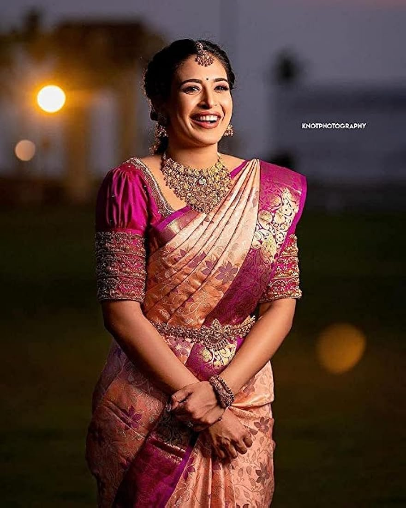

In a genuine Kanchipuram Silk Sari, body and border are woven separately and then interlocked together. The joint is woven so strongly that even if the saris tears, the border will not detach. That differentiates the kanchivaram silk saris from the others. Known as the City of Thousand Temples, Kanchipuram is known for its temple architectures, 1000-pillared halls, huge temple towers and silk saris. Kanchipuram serves as one of the most important inland tourist destinations in India. Kanchipuram has become a centre of attraction for foreign tourists as well Kanchi was a major seat of Tamil learning as well as an important place of pilgrimage for Buddhists, Jains and Hindus. Once the seat of learning and religious fervour started its climb down from the mughal invasions followed by three centuries of colonial rule under the British.
Saree:Kanjipuram Pattu
Beautiful Collections All Sarees for One Place in Tamil Fashion
Kanchipuram sarees, woven from pure mulberry silk, are found in myriad colours. These sarees have borders and pallu in a contrasting colour with heavy gold weaving. Kanchipuram sarees traditionally had designs representing simple gold lines or gold dots.